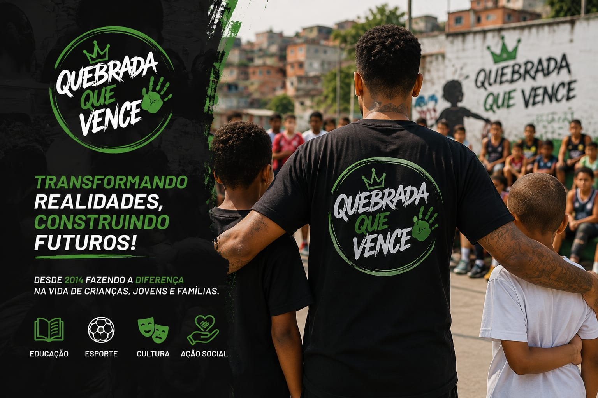

Uma história construída pela comunidade
O Projeto Quebrada Que Vence nasceu em 2014, com o propósito de transformar a realidade da comunidade do Conjunto Habitacional Fazenda do Carmo, na Zona Leste de São Paulo. Porém, a história do projeto é muito mais do que uma iniciativa social: é uma história de luta, resiliência e esperança, construída por pessoas que acreditam no poder da educação, do esporte e da cultura como ferramentas de transformação social.
Desde o início, buscamos criar oportunidades para crianças, jovens e famílias, aproximando a comunidade da educação, da cultura, do esporte e da cidadania.
Ao longo dos anos, o projeto se consolidou como referência na região, promovendo atividades que fortalecem os vínculos comunitários. Através de parcerias com escolas, empresas e organizações sociais, ampliamos nosso alcance e beneficiamos cada vez mais pessoas.
O que nos move
Nossa atuação é guiada por princípios que fortalecem a comunidade e orientam cada ação do Projeto Quebrada Que Vence.
Missão
Promover oportunidades e transformar vidas por meio da educação, do esporte, da cultura e de ações sociais, fortalecendo a comunidade e incentivando a participação de todos.
Visão
Construir uma comunidade cada vez mais fortalecida, participativa e consciente de seu potencial, ampliando oportunidades e contribuindo para um futuro melhor.
Valores
Solidariedade, respeito, união, responsabilidade, inclusão, educação e compromisso com a transformação social da comunidade.